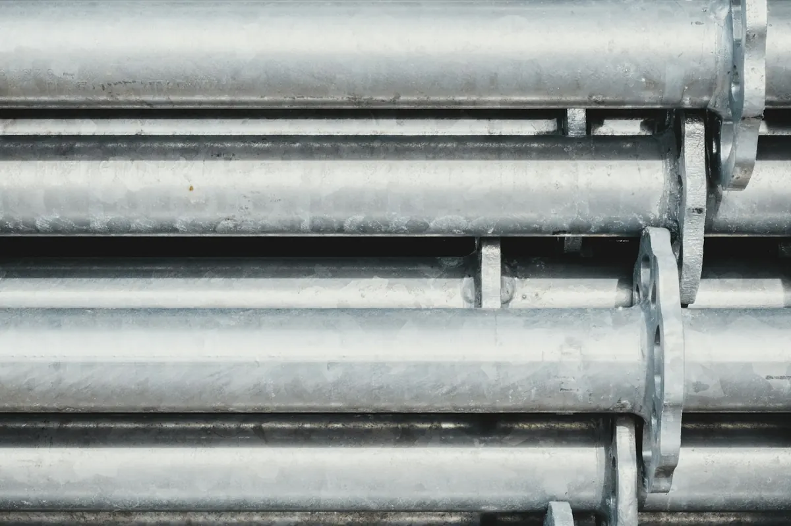
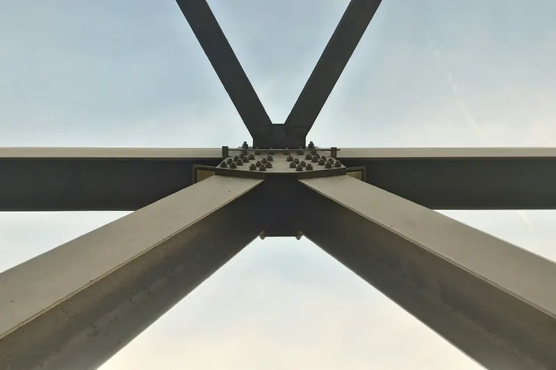

Galvanizado en caliente
La pieza se sumerge en zinc fundido. Capa gruesa, típica de estructuras, barandillas y cerrajería.
Pintura en polvo sobre galvanizado en Legutio (Álava), cerca de Vitoria-Gasteiz
Pintar galvanizado con polvo tiene truco: el zinc retiene gases que, en el horno, salen a través de la pintura y dejan poros y burbujas. Con la preparación adecuada, la pieza suma la protección del zinc y la de la pintura.

El zinc del galvanizado en caliente puede retener aire y humedad en pequeños poros y grietas de su capa exterior. En el horno de curado, la pieza se calienta y esos gases salen justo cuando la pintura está fundida: quedan poros, cráteres o burbujas. Es la desgasificación, y también aparece en fundición, piezas metalizadas o con soldadura de estaño.
Se evita preparando la pieza: limpieza y preparación de la superficie (un barrido suave con abrasivo o un pretratamiento químico), desgasificado en horno por encima de la temperatura de curado para que el zinc suelte los gases antes de pintar, y aplicación del polvo en cuanto la pieza baja a la temperatura que indica el fabricante del polvo. Según el caso, se usan imprimaciones o polvos formulados para sustratos que desgasifican.
Galvanizar y pintar es un sistema dúplex. El zinc protege el acero y la pintura protege el zinc, de modo que el conjunto dura más que cada capa por separado. Además, la pintura da el color.
Dos normas europeas lo regulan. La EN 15773 (2018) recoge cómo aplicar polvo sobre acero galvanizado en caliente o sherardizado, incluida la calidad del zinc y lo que deben acordar el cliente, el galvanizador y el lacador. La EN 13438 fija las prestaciones que debe tener el recubrimiento en polvo sobre galvanizado para construcción. Son normas, no sellos: si tu pliego las cita, dínoslo y te decimos qué ensayos podemos aportar.
La preparación cambia, así que conviene indicarlo al pedir presupuesto:
La pieza se sumerge en zinc fundido. Capa gruesa, típica de estructuras, barandillas y cerrajería.
Zinc depositado por electrólisis. Capa fina y lisa, típica de tornillería y piezas pequeñas.
Chapa galvanizada en continuo, de bobina. Típica de envolventes, carcasas y piezas plegadas.
Sí, con una preparación específica. El galvanizado retiene gases que pueden salir en el horno y dejar poros, así que la pieza se prepara y se precalienta antes de pintar.
Por la desgasificación: el zinc retiene aire y humedad en pequeños poros y, al calentarse en el horno, los suelta a través de la pintura todavía fundida. Se evita desgasificando la pieza en horno antes de pintar, por encima de la temperatura de curado, y aplicando el polvo en cuanto se enfría a la temperatura que indica el fabricante; si hace falta, con imprimaciones o polvos formulados para desgasificar.
Es la combinación de galvanizado y pintura. El zinc protege el acero, la pintura protege el zinc y el conjunto dura más que cada capa por separado.
No siempre. Las opciones son un barrido suave con abrasivo, que abre la superficie y retira muy poco zinc (los fabricantes de polvo hablan de 5–10 µm como máximo), o un pretratamiento químico. En JomaPaint usamos pretratamiento químico y desgasificamos la pieza en horno antes de pintar.
Que sepa que la pieza se va a pintar en polvo. La norma EN 15773 prevé que el cliente, el galvanizador y el lacador acuerden la calidad del zinc y su preparación; cuanto antes lo hablemos, menos sorpresas en el horno.
 Termolacado de piezas y estructuras
Pintura en polvo epoxi, poliéster o epoxi-poliéster sobre acero, galvanizado y aluminio, del piecerío a la gran dimensión. Carta RAL, y Pantone y NCS bajo pedido: liso, texturado fino o gofrado, del mate al brillo, y también metalizados y perlados.
Termolacado de piezas y estructuras
Pintura en polvo epoxi, poliéster o epoxi-poliéster sobre acero, galvanizado y aluminio, del piecerío a la gran dimensión. Carta RAL, y Pantone y NCS bajo pedido: liso, texturado fino o gofrado, del mate al brillo, y también metalizados y perlados.

Imprimación rica en zinc Alternativa al galvanizado o al zincado: una imprimación con polvo de zinc que protege el acero y, encima, la pintura en polvo. Anticorrosión C4-H, con sello en proceso de homologación. Lacado de perfiles de aluminio
Perfilería en el color y el acabado que necesites, con la misma línea y el mismo control.
Lacado de perfiles de aluminio
Perfilería en el color y el acabado que necesites, con la misma línea y el mismo control.
 Grabado láser e impresión UV
Grabado láser, impresión UV con relieve, tampografía y serigrafía: logotipos, referencias e indicaciones sobre la pieza.
Grabado láser e impresión UV
Grabado láser, impresión UV con relieve, tampografía y serigrafía: logotipos, referencias e indicaciones sobre la pieza.
Firme y por escrito en menos de 24 horas laborables. Si lo prefieres, llámanos.